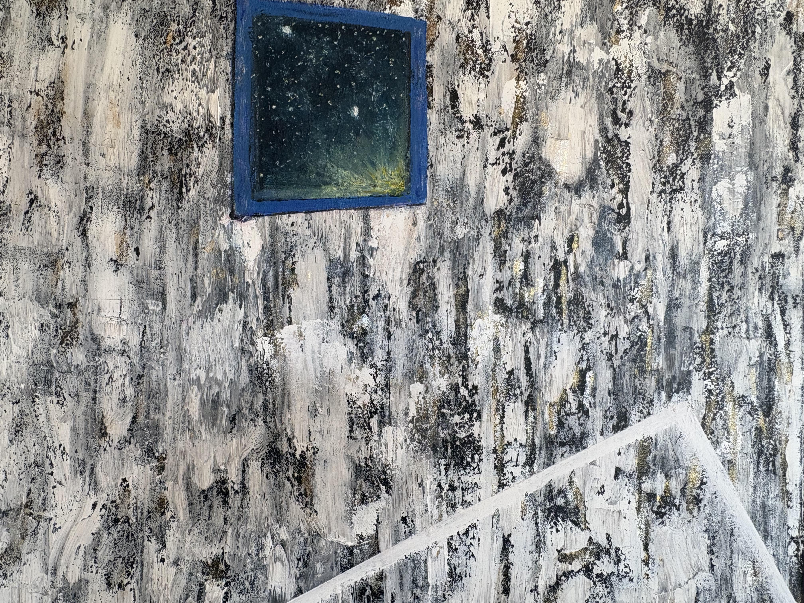
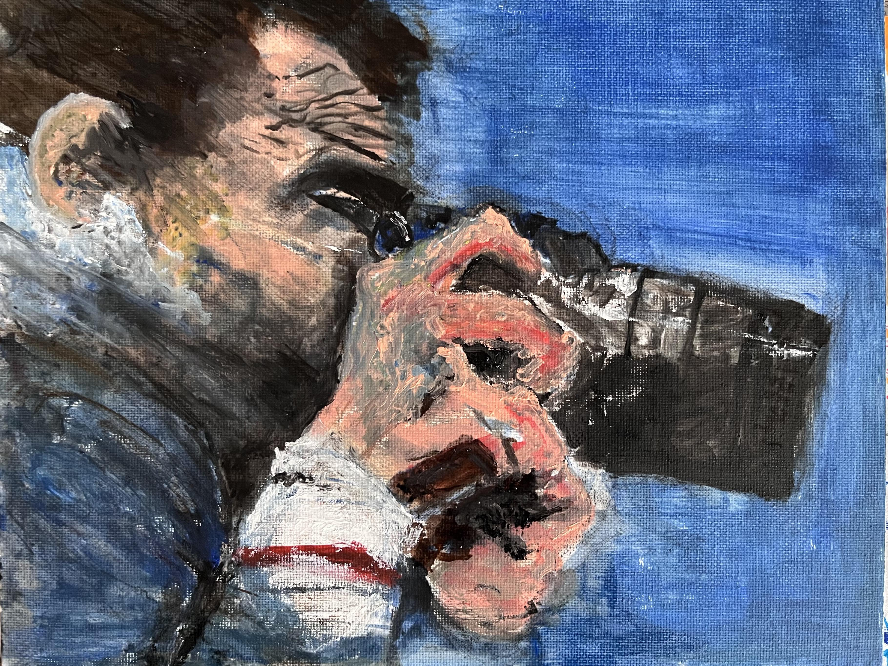
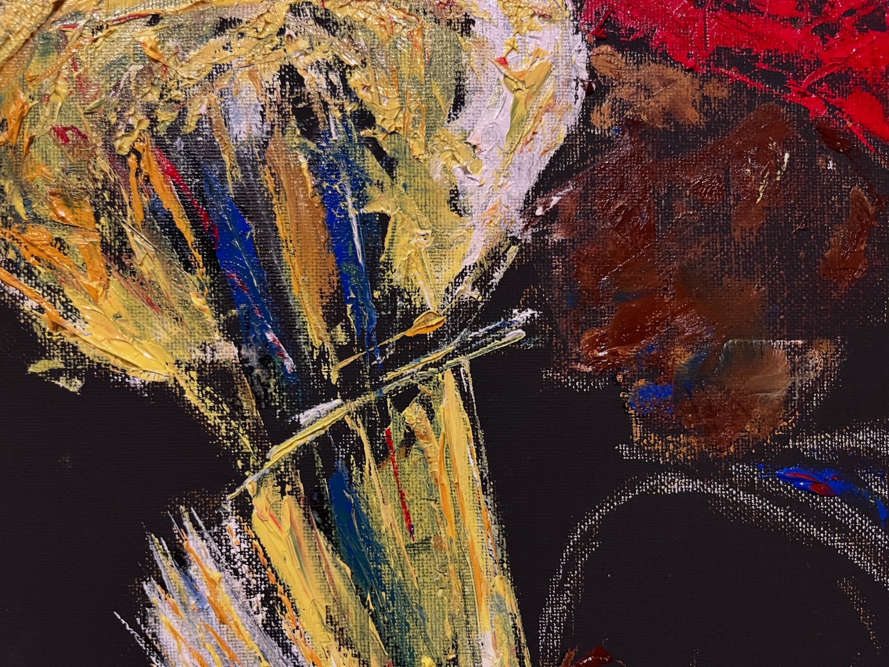
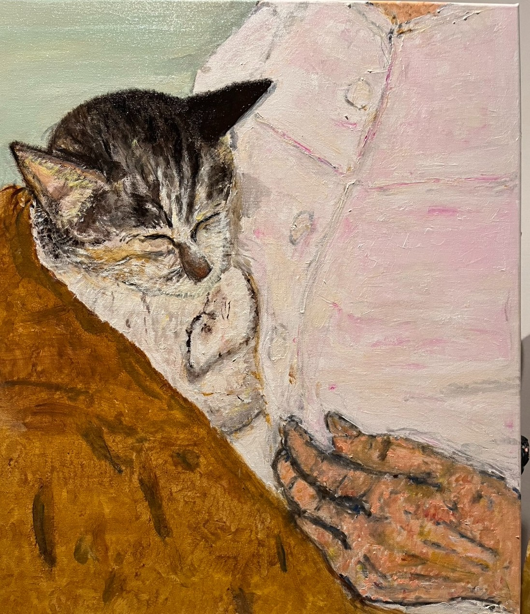
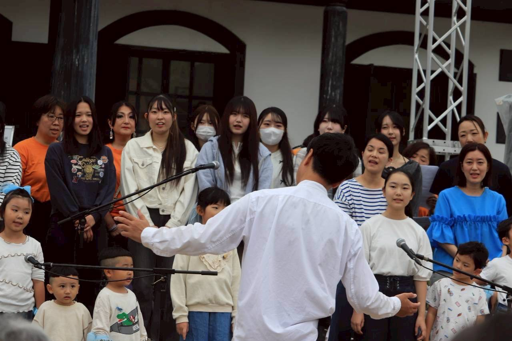
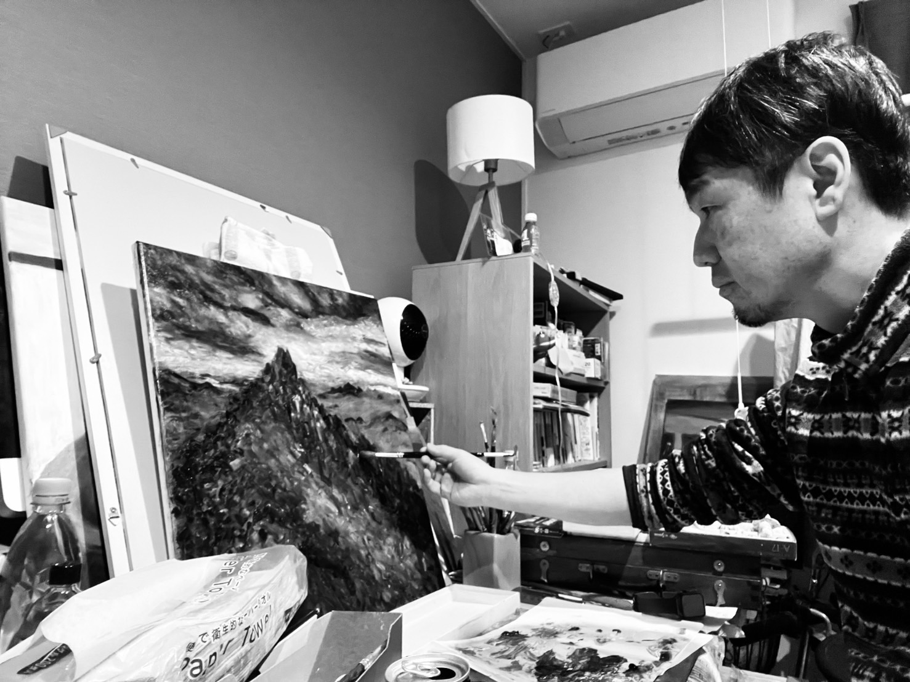

いのちの傍で
病室の灯りが落ちたあと、廊下の足音だけが残る時間。 その傍らで、絵を描き始めました。
医療現場に従事する中で、コロナ禍という出口の見えない日々を過ごしていました。 自宅と職場を往復するだけの生活の中で、ふと油彩との出会いがありました。
看護や音楽療法の傍らで感じた「いのち」のやさしさや尊さ、日常の情景や感情を、ありのままに、声を張らずに描き出すことを試みています。
優しさだけではない、緊張も、孤独も、生活も。 いのちの傍で、たしかに鳴っていた音を、絵にしています。
作品

病室で過ごす患者さんの気持ちを描きました。 眠れぬ夜。眠ると明日が来ないかもしれない、という思い。 そんな中、窓の外の星だけが、静かに美しく輝いていました。
生と死のはざまで揺れる心を描いています。

看護学生時代に、水俣病について深く学びました。 その頃に出会ったのが、写真家・半永一光（はんなが かずみつ）さんです。
半永さんは水俣病の胎児性患者として、生まれる前に有機水銀に被曝し、歩行や発話が困難な体を抱えて生まれました。 17歳の頃からカメラを手に取り、故郷である水俣の風景や人々の姿を、およそ6000枚もの写真に収めました。 話すことが大変な彼にとって、写真は自分を表現する大切な手段でした。
作品には「分かっていることを伝えられない」というもどかしさ、仲間たちへの思い、そして水俣の再生への願いが込められています。
1991年の「水俣国際会議」では、患者たちが発言する機会は設けられませんでした。 けれども半永さんは、写真展を開くことでその思いを伝え続けました。 2017年の「水俣病展2017」では、オープニングセレモニーでテープカットの大役を務め、「命は美しい」というメッセージを伝えています。
人間の未熟さ・愚かさが、誰かの命と人権を奪ってしまう。 ―「かくされた悪を注意深くこばむこと」は、谷川俊太郎『生きる』の中の一文。 その言葉が、半永一光さんと重なります。



小田切 佳仁 について
山梨県甲府市在住。 医療法人どちペインクリニック / 玉穂ふれあい診療所（緩和ケア機能を有する有床診療所）にて、病棟看護師長 兼 音楽療法士として勤務。
2020年、「県民の看護師さん」を受賞。 遺族からの推薦により、地域に根ざした医療と、患者の心に寄り添う実践を、コロナ禍においても工夫を重ねながら継続してきたことが評価された。
30代の母親の最期に、子どもたちと病室のベランダで家族写真を撮影したエピソードは、朝日新聞でも取り上げられている。
音楽活動としては打楽器奏者であり、日本音楽療法学会認定音楽療法士。 地域の子どもたちが集う「甲府 風の合唱団」の団長も務める。
多数のアーティストとのコンサート活動に加え、子どもから高齢者まで楽しめる音楽ワークショップ「音もだちになろう」を各地で開催し、好評を得ている。


企画展 いのちの傍で
医療現場に従事する中で、コロナ禍という出口の見えない日々を過ごしました。 自宅と職場を往復する生活の中で描き始めた油絵作品群を、展示します。
看護や音楽療法の傍らで感じた「いのち」のやさしさや尊さ、日常の情景や感情を、ありのままに描き出した作品が並びます。
会場・会期
- DATES
- 2026年 6月 6日 土 ― 6月 20日 土
- HOURS
- 12:00 ― 18:00
- OPEN
- 土・日・月・火
- VENUE
-
saule branche shinchō
〒031-0802 青森県八戸市小中野八丁目8-40 - TEL
- 0178-85-9017
- saulebranche@gmail.com
クロージングトーク ＆ ライヴ
- DATE
- 2026年 6月 20日 土
- OPEN
- 18:00
- START
- 19:00
- FEE
- ¥3,000
- ACT
-
ひとさん（小田切 仁）
古谷 淳（ピアノ）
トルホヴォッコ楽団